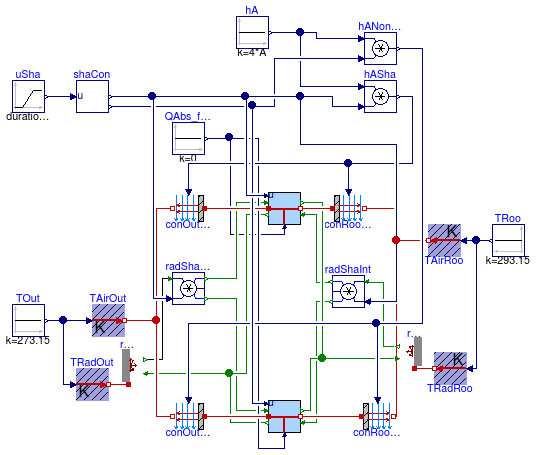
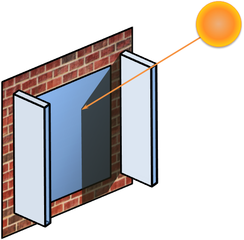
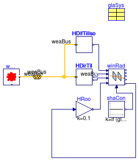

Collection of models that illustrate model use and test models
Information
This package contains examples for the use of models that can be found in
Buildings.HeatTransfer.Windows.BaseClasses.
Extends from Modelica.Icons.ExamplesPackage (Icon for packages containing runnable examples).
Package Content
Test model for absorbed radiation by windows

Information
This example illustrates modeling of window radiation.
Extends from Modelica.Icons.Example (Icon for runnable examples).
Parameters
| Type | Name | Default | Description |
|---|
| Angle | lat | 0.34906585039887 | Latitude [rad] |
| Angle | azi | 0 | Surface azimuth [rad] |
| Angle | til | 1.5707963267949 | Surface tilt [rad] |
| DoubleClearAir13Clear | glaSys | | Parameters for glazing system |
Connectors
| Type | Name | Description |
|---|
| Bus | weaBus | |
Modelica definition
model AbsorbedRadiation
"Test model for absorbed radiation by windows"
extends Modelica.Icons.Example;
parameter Modelica.SIunits.Angle lat=0.34906585039887
"Latitude";
parameter Modelica.SIunits.Angle azi=0
"Surface azimuth";
parameter Modelica.SIunits.Angle til=1.5707963267949
"Surface tilt";
BoundaryConditions.SolarIrradiation.DirectTiltedSurface HDirTil(
til=til,
lat=lat,
azi=azi);
BoundaryConditions.WeatherData.Bus weaBus;
BoundaryConditions.WeatherData.ReaderTMY3 weaDat(filNam=
"modelica://Buildings/Resources/weatherdata/USA_IL_Chicago-OHare.Intl.AP.725300_TMY3.mos",
computeWetBulbTemperature=false);
BoundaryConditions.SolarIrradiation.DiffuseIsotropic HDifTilIso(
til=til);
Modelica.Blocks.Sources.Constant shaCon(k=
if (glaSys.haveShade)
then 0.5
else
0);
Buildings.HeatTransfer.Windows.BaseClasses.AbsorbedRadiation winAbs(
AWin=1,
N=
size(glaSys.glass, 1),
tauGlaSol=glaSys.glass.tauSol,
rhoGlaSol_a=glaSys.glass.rhoSol_a,
rhoGlaSol_b=glaSys.glass.rhoSol_b,
xGla=glaSys.glass.x,
tauShaSol_a=glaSys.shade.tauSol_a,
tauShaSol_b=glaSys.shade.tauSol_b,
rhoShaSol_a=glaSys.shade.rhoSol_a,
rhoShaSol_b=glaSys.shade.rhoSol_b,
haveExteriorShade=glaSys.haveExteriorShade,
haveInteriorShade=glaSys.haveInteriorShade);
parameter Buildings.HeatTransfer.Data.GlazingSystems.DoubleClearAir13Clear glaSys(
shade=
Buildings.HeatTransfer.Data.Shades.Gray(),
UFra=2,
haveExteriorShade=false,
haveInteriorShade=true)
"Parameters for glazing system";
Modelica.Blocks.Sources.Constant HRoo(k=10);
equation
connect(weaDat.weaBus, weaBus);
connect(HDirTil.weaBus, weaBus);
connect(weaBus, HDifTilIso.weaBus);
connect(shaCon.y,winAbs. uSha);
connect(winAbs.HDir, HDirTil.H);
connect(HDifTilIso.H,winAbs. HDif);
connect(HDirTil.inc,winAbs. incAng);
connect(HRoo.y,winAbs. HRoo);
end AbsorbedRadiation;
Test model for center of glas heat transfer
Information
This model tests the heat transfer for the center of the glass, with and without a shading device.
Extends from Modelica.Icons.Example (Icon for runnable examples).
Parameters
| Type | Name | Default | Description |
|---|
| Area | A | 1 | Window surface area [m2] |
| Boolean | linearize | false | Set to true to linearize emissive power |
| DoubleClearAir13Clear | glaSys | | Parameters for glazing system |
Modelica definition
model CenterOfGlass
"Test model for center of glas heat transfer"
extends Modelica.Icons.Example;
parameter Modelica.SIunits.Area A=1
"Window surface area";
parameter Boolean linearize = false
"Set to true to linearize emissive power";
Buildings.HeatTransfer.Windows.BaseClasses.CenterOfGlass sha(
A=A,
linearize=linearize,
til=1.5707963267949,
glaSys=glaSys)
"Model for fraction of window that has a shade";
Modelica.Blocks.Sources.Ramp uSha(
height=0.9,
duration=1,
offset=0.05)
"Control signal for shade";
Buildings.HeatTransfer.Sources.PrescribedTemperature TAirOut
"Outside air temperature";
Modelica.Blocks.Sources.Constant TOut(k=273.15)
"Outside temperature";
Buildings.HeatTransfer.Sources.PrescribedTemperature TAirRoo
"Room temperature";
Buildings.HeatTransfer.Radiosity.OpaqueSurface radIn(A=A, absIR=0.8,
linearize=false)
"Model for inside radiosity";
Modelica.Blocks.Sources.Constant TRoo(k=293.15)
"Room temperature";
Buildings.HeatTransfer.Sources.PrescribedTemperature TRadRoo
"Room radiative temperature";
Buildings.HeatTransfer.Radiosity.RadiositySplitter radShaInt
"Radiosity that strikes shading device";
Buildings.HeatTransfer.Windows.BaseClasses.CenterOfGlass nonSha(
A=A,
linearize=linearize,
til=1.5707963267949,
glaSys=glaSys)
"Model for fraction of window that has no shade";
Buildings.HeatTransfer.Radiosity.RadiositySplitter radShaOut
"Radiosity that strikes shading device";
parameter Buildings.HeatTransfer.Data.GlazingSystems.DoubleClearAir13Clear glaSys(
shade=
Buildings.HeatTransfer.Data.Shades.Gray(),
haveExteriorShade=true,
haveInteriorShade=true,
UFra=2)
"Parameters for glazing system";
Buildings.HeatTransfer.Radiosity.OutdoorRadiosity radOut(A=A,
vieFacSky=0.5)
"Outdoor radiosity";
Modelica.Thermal.HeatTransfer.Components.Convection conRooSha
"Convection for room-facing surface of shaded part of window";
Modelica.Thermal.HeatTransfer.Components.Convection conOutSha
"Convection for outside-facing surface of shaded part of window";
Modelica.Thermal.HeatTransfer.Components.Convection conOutNonSha1
"Convection for outside-facing surface of non-shaded part of window";
Modelica.Thermal.HeatTransfer.Components.Convection conRooNonSha
"Convection for room-facing surface of non-shaded part of window";
Modelica.Blocks.Sources.Constant hA(k=4*A)
"Convection coefficient times total area";
Modelica.Blocks.Math.Product hASha
"Convection of shaded part of window";
Modelica.Blocks.Math.Product hANonSha
"Convection of non-shaded part of window";
Buildings.HeatTransfer.Windows.BaseClasses.ShadingSignal shaCon(haveShade=
glaSys.haveExteriorShade
or glaSys.haveInteriorShade)
"Bounds the shading signal";
Modelica.Blocks.Sources.Constant QAbs[
size(glaSys.glass, 1)](
each k=0)
"Solar radiation absorbed by glass";
Modelica.Blocks.Math.MultiSum sumJ(nu=2)
"Sum of radiosities from the two surfaces";
equation
connect(TOut.y, TAirOut.T);
connect(TRoo.y, TAirRoo.T);
connect(TRadRoo.port, radIn.heatPort);
connect(TRadRoo.T, TRoo.y);
connect(radIn.JOut, radShaInt.JIn);
connect(radOut.JOut, radShaOut.JIn);
connect(hA.y, hANonSha.u1);
connect(hASha.u1, hA.y);
connect(hASha.y, conOutSha.Gc);
connect(hASha.y, conRooSha.Gc);
connect(hANonSha.y, conOutNonSha1.Gc);
connect(hANonSha.y, conRooNonSha.Gc);
connect(conOutSha.solid, sha.glass_a);
connect(conOutSha.fluid, TAirOut.port);
connect(nonSha.glass_a, conOutNonSha1.solid);
connect(conOutNonSha1.fluid, TAirOut.port);
connect(nonSha.glass_b, conRooNonSha.solid);
connect(conRooNonSha.fluid, TAirRoo.port);
connect(conRooSha.fluid, TAirRoo.port);
connect(conRooSha.solid, sha.glass_b);
connect(radShaOut.JOut_1, sha.JIn_a);
connect(radShaOut.JOut_2, nonSha.JIn_a);
connect(radShaInt.JOut_1, sha.JIn_b);
connect(radShaInt.JOut_2, nonSha.JIn_b);
connect(shaCon.yCom, hANonSha.u2);
connect(shaCon.yCom, nonSha.u);
connect(shaCon.y, radShaOut.u);
connect(shaCon.y, radShaInt.u);
connect(shaCon.y, sha.u);
connect(uSha.y, shaCon.u);
connect(shaCon.y, hASha.u2);
connect(QAbs.y, nonSha.QAbs_flow);
connect(QAbs.y, sha.QAbs_flow);
connect(radOut.TOut, TOut.y);
connect(TOut.y, radOut.TBlaSky);
connect(radIn.JIn, sumJ.y);
connect(sha.JOut_b, sumJ.u[1]);
connect(nonSha.JOut_b, sumJ.u[2]);
end CenterOfGlass;
Test problem for convection in the gas layer

Information
Extends from Modelica.Icons.Example (Icon for runnable examples).
Modelica definition
model GasConvection
"Test problem for convection in the gas layer"
extends Modelica.Icons.Example;
Buildings.HeatTransfer.Windows.BaseClasses.GasConvection conVer(
A=1,
linearize=false,
gas=
Buildings.HeatTransfer.Data.Gases.Air(x=0.1),
til=Buildings.Types.Tilt.Wall)
"Model for gas convection in vertical gap";
Modelica.Blocks.Sources.Ramp TBC(
duration=1,
offset=283.15,
height=20)
"Boundary condition for temperature";
Buildings.HeatTransfer.Sources.PrescribedTemperature T_a1
"Exterior-side temperature";
Buildings.HeatTransfer.Sources.FixedTemperature T_b1(T=293.15)
"Room-side temperature";
Modelica.Blocks.Sources.Constant u(k=1)
"Shading control signal";
Buildings.HeatTransfer.Windows.BaseClasses.GasConvection conCei(
A=1,
linearize=false,
gas=
Buildings.HeatTransfer.Data.Gases.Air(x=0.1),
til=Buildings.Types.Tilt.Ceiling)
"Model for gas convection in horizontal gap in a ceiling";
Buildings.HeatTransfer.Sources.PrescribedTemperature T_a2
"Exterior-side temperature";
Buildings.HeatTransfer.Sources.FixedTemperature T_b2(T=293.15)
"Room-side temperature";
Buildings.HeatTransfer.Windows.BaseClasses.GasConvection conFlo(
A=1,
linearize=false,
gas=
Buildings.HeatTransfer.Data.Gases.Air(x=0.1),
til=Buildings.Types.Tilt.Floor)
"Model for gas convection in horizontal gap in a floor";
Buildings.HeatTransfer.Sources.PrescribedTemperature T_a3
"Exterior-side temperature";
Buildings.HeatTransfer.Sources.FixedTemperature T_b3(T=293.15)
"Room-side temperature";
equation
connect(TBC.y, T_a1.T);
connect(T_a1.port, conVer.port_a);
connect(conVer.port_b, T_b1.port);
connect(u.y, conVer.u);
connect(TBC.y, T_a2.T);
connect(T_a2.port, conCei.port_a);
connect(conCei.port_b, T_b2.port);
connect(u.y, conCei.u);
connect(TBC.y, T_a3.T);
connect(T_a3.port, conFlo.port_a);
connect(conFlo.port_b, T_b3.port);
connect(u.y, conFlo.u);
end GasConvection;
Test model for glass layer heat transfer

Information
This model tests one glas layer.
Extends from Modelica.Icons.Example (Icon for runnable examples).
Parameters
| Type | Name | Default | Description |
|---|
| Area | A | 1 | Window surface area [m2] |
| Boolean | linearize | false | Set to true to linearize emissive power |
Modelica definition
model GlassLayer
"Test model for glass layer heat transfer"
extends Modelica.Icons.Example;
parameter Modelica.SIunits.Area A=1
"Window surface area";
parameter Boolean linearize = false
"Set to true to linearize emissive power";
Buildings.HeatTransfer.Windows.BaseClasses.GlassLayer sha(
A=A,
absIR_a=0.5,
tauIR=0.2,
x=0.015,
k=1,
linearize=linearize,
absIR_b=0.5)
"Model for fraction of window that has a shade";
Buildings.HeatTransfer.Sources.PrescribedTemperature TAirOut
"Outside air temperature";
Modelica.Blocks.Sources.Constant TOut(k=273.15)
"Outside temperature";
Buildings.HeatTransfer.Sources.PrescribedTemperature TAirRoo
"Room temperature";
Buildings.HeatTransfer.Radiosity.OpaqueSurface radOut(A=A, absIR=0.8,
linearize=false)
"Model for outside radiosity";
Buildings.HeatTransfer.Sources.PrescribedTemperature TRadOut
"Outside radiative temperature";
Buildings.HeatTransfer.Radiosity.OpaqueSurface radIn(A=A, absIR=0.8,
linearize=false)
"Model for inside radiosity";
Modelica.Blocks.Sources.Constant TRoo(k=293.15)
"Room temperature";
Buildings.HeatTransfer.Sources.PrescribedTemperature TRadRoo
"Room radiative temperature";
Modelica.Blocks.Sources.Constant QAbs_flow(k=0)
"Absorbed solar heat flow";
Buildings.HeatTransfer.Radiosity.RadiositySplitter radShaInt
"Radiosity that strikes shading device";
Buildings.HeatTransfer.Windows.BaseClasses.GlassLayer nonSha(
A=A,
absIR_a=0.5,
tauIR=0.2,
x=0.015,
k=1,
linearize=linearize,
absIR_b=0.5)
"Model for fraction of window that has no shade";
Buildings.HeatTransfer.Radiosity.RadiositySplitter radShaOut
"Radiosity that strikes shading device";
Modelica.Thermal.HeatTransfer.Components.Convection conRooSha
"Convection for room-facing surface of shaded part of window";
Modelica.Thermal.HeatTransfer.Components.Convection conRooNonSha
"Convection for room-facing surface of non-shaded part of window";
Modelica.Blocks.Sources.Constant hA(k=4*A)
"Convection coefficient times total area";
Modelica.Blocks.Math.Product hASha
"Convection of shaded part of window";
Modelica.Blocks.Math.Product hANonSha
"Convection of non-shaded part of window";
Modelica.Thermal.HeatTransfer.Components.Convection conOutSha
"Convection for outside-facing surface of shaded part of window";
Modelica.Thermal.HeatTransfer.Components.Convection conOutNonSha1
"Convection for outside-facing surface of non-shaded part of window";
Modelica.Blocks.Sources.Ramp uSha(
height=0.9,
duration=1,
offset=0.05)
"Control signal for shade";
Buildings.HeatTransfer.Windows.BaseClasses.ShadingSignal shaCon(haveShade=
true)
"Bounds the shading signal";
Modelica.Blocks.Math.MultiSum sumJOut(nu=2)
"Sum of radiosities at outer surface";
Modelica.Blocks.Math.MultiSum sumJRoo(nu=2)
"Sum of radiosities at room surface";
equation
connect(TOut.y, TAirOut.T);
connect(TRadOut.port, radOut.heatPort);
connect(TRadOut.T, TOut.y);
connect(TRoo.y, TAirRoo.T);
connect(TRadRoo.port, radIn.heatPort);
connect(TRadRoo.T, TRoo.y);
connect(QAbs_flow.y, sha.QAbs_flow);
connect(radShaOut.JIn, radOut.JOut);
connect(radIn.JOut, radShaInt.JIn);
connect(radShaOut.JOut_1, sha.JIn_a);
connect(radShaOut.JOut_2, nonSha.JIn_a);
connect(radShaInt.JOut_1, sha.JIn_b);
connect(radShaInt.JOut_2, nonSha.JIn_b);
connect(QAbs_flow.y, nonSha.QAbs_flow);
connect(hA.y, hANonSha.u1);
connect(hASha.u1, hA.y);
connect(nonSha.port_a, conOutNonSha1.solid);
connect(conOutNonSha1.fluid, TAirOut.port);
connect(sha.port_a, conOutSha.solid);
connect(conOutSha.fluid, TAirOut.port);
connect(nonSha.port_b, conRooNonSha.solid);
connect(sha.port_b, conRooSha.solid);
connect(conRooSha.fluid, TAirRoo.port);
connect(conRooNonSha.fluid, TAirRoo.port);
connect(hASha.y, conOutSha.Gc);
connect(hASha.y, conRooSha.Gc);
connect(hANonSha.y, conOutNonSha1.Gc);
connect(hANonSha.y, conRooNonSha.Gc);
connect(shaCon.yCom, hANonSha.u2);
connect(shaCon.yCom, nonSha.u);
connect(shaCon.y, radShaOut.u);
connect(shaCon.y, radShaInt.u);
connect(shaCon.y, sha.u);
connect(uSha.y,shaCon. u);
connect(shaCon.y, hASha.u2);
connect(radOut.JIn, sumJOut.y);
connect(sha.JOut_a, sumJOut.u[1]);
connect(nonSha.JOut_a, sumJOut.u[2]);
connect(radIn.JIn, sumJRoo.y);
connect(sha.JOut_b, sumJRoo.u[1]);
connect(nonSha.JOut_b, sumJRoo.u[2]);
end GlassLayer;
Test model for the interior heat transfer due to convection

Information
This is a test model for the interior side convective heat transfer.
During the simulation, the shading control signal is changed, which
causes a change in the convective heat flow rate.
Extends from Modelica.Icons.Example (Icon for runnable examples).
Modelica definition
Test model for the overhang

Information
This example uses the basic overhang model with solar angles as input and calculates the fraction of total window area that is exposed to the sun.
For a detail description of the solar angles used in the model, see
Buildings.BoundaryConditions.SolarGeometry.
For a detailed description of the overhang block, see
Buildings.HeatTransfer.Windows.BaseClasses.Overhang.
The required data for the solar angle calculations is obtained from weather data.
Solar angles used in this model are:
The values of the parameters of the overhang model have been set in such
a way that the overhang in non-symmetric with respect to the window center-line.
Extends from Modelica.Icons.Example (Icon for runnable examples).
Connectors
| Type | Name | Description |
|---|
| Bus | weaBus | |
Modelica definition
model Overhang
"Test model for the overhang"
extends Modelica.Icons.Example;
Buildings.BoundaryConditions.SolarGeometry.IncidenceAngle incAng(
lat=weaDat.lat,
azi=Buildings.Types.Azimuth.S,
til=Buildings.Types.Tilt.Wall)
"Solar incidence angle on a tilted surface";
Buildings.BoundaryConditions.WeatherData.ReaderTMY3 weaDat(filNam="modelica://Buildings/Resources/weatherdata/USA_IL_Chicago-OHare.Intl.AP.725300_TMY3.mos")
"Weather data";
Buildings.HeatTransfer.Windows.BaseClasses.Overhang ove(
gap=0.1,
azi=Buildings.Types.Azimuth.S,
lat=weaDat.lat,
wL=0,
wR=0.95,
dep=0.5,
hWin=2,
wWin=0.1)
"Calculates fraction of window area shaded by the overhang";
Buildings.BoundaryConditions.SolarGeometry.BaseClasses.WallSolarAzimuth walSolAzi
"Angle measured in horizontal plane between projection of sun's rays and normal to vertical surface";
Buildings.BoundaryConditions.WeatherData.Bus weaBus;
equation
connect(weaDat.weaBus, incAng.weaBus);
connect(incAng.y, walSolAzi.incAng);
connect(walSolAzi.verAzi, ove.verAzi);
connect(weaDat.weaBus, ove.weaBus);
connect(weaDat.weaBus, weaBus);
connect(weaBus.solAlt, walSolAzi.alt);
connect(weaBus.solAlt, ove.alt);
end Overhang;
Test model for exterior shade heat transfer

Information
This model tests the shading device. Note that the temperature of the shading device changes
slightly as the shade control signal changes (i.e., as the shade is lowered).
This is because the shade has a different emissive power than the glass, which changes the
energy balance.
Extends from Modelica.Icons.Example (Icon for runnable examples).
Parameters
| Type | Name | Default | Description |
|---|
| Area | A | 1 | Window surface area [m2] |
| Boolean | linearize | true | Set to true to linearize emissive power |
Modelica definition
model Shade
"Test model for exterior shade heat transfer"
extends Modelica.Icons.Example;
parameter Modelica.SIunits.Area A=1
"Window surface area";
parameter Boolean linearize = true
"Set to true to linearize emissive power";
Buildings.HeatTransfer.Windows.BaseClasses.ShadeRadiation extShaRad(
A=A,
linearize=false,
absIR_air=0.3,
absIR_glass=0.3,
tauIR_air=0.3,
tauIR_glass=0.3,
thisSideHasShade=true)
"Radiation model of exterior shade";
Modelica.Blocks.Sources.Ramp uSha(
height=0.9,
duration=1,
offset=0.05)
"Control signal for shade";
Modelica.Blocks.Sources.Constant TOut(k=273.15)
"Outside temperature";
Buildings.HeatTransfer.Radiosity.OpaqueSurface radOut(A=A, absIR=0.8,
linearize=false)
"Model for outside radiosity";
Buildings.HeatTransfer.Sources.PrescribedTemperature TRadOut
"Outside radiative temperature";
Buildings.HeatTransfer.Radiosity.OpaqueSurface radIn(A=A, absIR=0.8,
linearize=false)
"Model for inside radiosity";
Modelica.Blocks.Sources.Constant TRoo(k=293.15)
"Room temperature";
Buildings.HeatTransfer.Sources.PrescribedTemperature TRadRoo
"Room radiative temperature";
Modelica.Blocks.Sources.Constant QSol_shade(k=0)
"Solar heat flow absorbed by shade";
Buildings.HeatTransfer.Radiosity.RadiositySplitter radShaInt
"Radiosity that strikes shading device";
Buildings.HeatTransfer.Windows.BaseClasses.ShadeRadiation extNonShaRad(
A=A,
linearize=false,
thisSideHasShade=false,
absIR_air=0,
absIR_glass=0,
tauIR_air=0.3,
tauIR_glass=0.3)
"Radiation model for fraction of window that has no shade";
Buildings.HeatTransfer.Radiosity.RadiositySplitter radShaOut
"Radiosity that strikes shading device";
Buildings.HeatTransfer.Sources.PrescribedTemperature TAirOut
"Outside air temperature";
Buildings.HeatTransfer.Sources.PrescribedTemperature TAirRoo
"Room-side air temperature";
Buildings.HeatTransfer.Windows.BaseClasses.ShadingSignal shaCon(haveShade=
true);
Modelica.Blocks.Math.Gain GConSha(k=10*A, y(unit="W/K"))
"Convection coefficient for shade part of window";
Modelica.Blocks.Math.Gain GConUns(k=10*A, y(unit="W/K"))
"Convection coefficient for unshade part of window";
Modelica.Blocks.Math.MultiSum sumJRoo(nu=2)
"Sum of room side radiosity";
Modelica.Blocks.Math.MultiSum sumJOut(nu=2)
"Sum of outdoor side radiosity";
Buildings.HeatTransfer.Windows.BaseClasses.ShadeConvection extShaCon(A=A,
thisSideHasShade=true)
"Convection model of exterior shade";
Buildings.HeatTransfer.Windows.BaseClasses.ShadeConvection extNonShaCon(A=A,
thisSideHasShade=false)
"Convection model for fraction of window that has no shade";
equation
connect(TRadOut.port, radOut.heatPort);
connect(TRadOut.T, TOut.y);
connect(TRadRoo.port, radIn.heatPort);
connect(TRadRoo.T, TRoo.y);
connect(radShaOut.JIn, radOut.JOut);
connect(radIn.JOut, radShaInt.JIn);
connect(radShaOut.JOut_1, extShaRad.JIn_air);
connect(radShaOut.JOut_2, extNonShaRad.JIn_air);
connect(radShaInt.JOut_1, extShaRad.JIn_glass);
connect(radShaInt.JOut_2, extNonShaRad.JIn_glass);
connect(TAirOut.T, TOut.y);
connect(TAirRoo.T, TRoo.y);
connect(shaCon.y, extShaRad.u);
connect(shaCon.y, radShaOut.u);
connect(uSha.y, shaCon.u);
connect(shaCon.yCom, extNonShaRad.u);
connect(GConSha.u, shaCon.y);
connect(shaCon.yCom, GConUns.u);
connect(shaCon.y, radShaInt.u);
connect(radIn.JIn, sumJRoo.y);
connect(radOut.JIn, sumJOut.y);
connect(TAirRoo.port, extShaCon.glass);
connect(TAirRoo.port, extNonShaCon.glass);
connect(extShaCon.air, TAirOut.port);
connect(extNonShaCon.air, TAirOut.port);
connect(GConUns.y, extNonShaCon.Gc);
connect(GConSha.y, extShaCon.Gc);
connect(extShaCon.TSha, extShaRad.TSha);
connect(extShaCon.QRadAbs_flow, extShaRad.QRadAbs_flow);
connect(extNonShaRad.TSha, extNonShaCon.TSha);
connect(extNonShaRad.QRadAbs_flow, extNonShaCon.QRadAbs_flow);
connect(extShaRad.JOut_air, sumJOut.u[1]);
connect(extNonShaRad.JOut_air, sumJOut.u[2]);
connect(extShaRad.JOut_glass, sumJRoo.u[1]);
connect(extNonShaRad.JOut_glass, sumJRoo.u[2]);
connect(extShaRad.QSolAbs_flow, QSol_shade.y);
connect(extNonShaRad.QSolAbs_flow, QSol_shade.y);
end Shade;
Test model for side fins

Information
This example uses the basic side fins model with solar angles as input and calculates the fraction of total window area that is exposed to the sun.
For a detailed description of the solar angles used in the model,
see to documentation in the package
Buildings.BoundaryConditions.SolarGeometry.
For a detail description of side fin model, see
Buildings.HeatTransfer.Windows.BaseClasses.SideFins.
The required data for the solar angle calculations are obtained from the weather data.
Solar angles used in this model are:

Extends from Modelica.Icons.Example (Icon for runnable examples).
Modelica definition
model SideFins
"Test model for side fins"
extends Modelica.Icons.Example;
Buildings.BoundaryConditions.SolarGeometry.ZenithAngle zen(lat=0.73129295658562)
"Zenith angle: angle between the earth surface normal and the sun's beam";
Buildings.BoundaryConditions.SolarGeometry.IncidenceAngle incAng(
azi=0,
lat=0.73129295658562,
til=1.5707963267949)
"Solar incidence angle on a tilted surface";
Buildings.BoundaryConditions.WeatherData.ReaderTMY3 weaDat(filNam="modelica://Buildings/Resources/weatherdata/USA_IL_Chicago-OHare.Intl.AP.725300_TMY3.mos")
"Weather data";
Buildings.HeatTransfer.Windows.BaseClasses.SideFins fin(
gap=0.1,
h=0.7,
dep=1.0,
hWin=1.5,
wWin=2.0)
"Calculates fraction of window area shaded by the side fins";
Buildings.BoundaryConditions.SolarGeometry.BaseClasses.AltitudeAngle
altAng
"Altitude angle: Angle between Sun ray and horizontal surface";
Buildings.BoundaryConditions.SolarGeometry.BaseClasses.WallSolarAzimuth walSolAzi
"Angle measured in horizontal plane between projection of sun's rays and normal to vertical surface";
equation
connect(weaDat.weaBus, zen.weaBus);
connect(weaDat.weaBus, incAng.weaBus);
connect(zen.y, altAng.zen);
connect(altAng.alt, fin.alt);
connect(walSolAzi.verAzi, fin.verAzi);
connect(altAng.alt, walSolAzi.alt);
connect(incAng.y, walSolAzi.incAng);
end SideFins;
Test model for transmitted radiation through window
Information
This example illustrates modeling of window transmittance.
Extends from Modelica.Icons.Example (Icon for runnable examples).
Parameters
| Type | Name | Default | Description |
|---|
| Angle | lat | 0.34906585039887 | Latitude [rad] |
| Angle | azi | 0 | Surface azimuth [rad] |
| Angle | til | 1.5707963267949 | Surface tilt [rad] |
| DoubleClearAir13Clear | glaSys | | Parameters for glazing system |
Connectors
| Type | Name | Description |
|---|
| Bus | weaBus | Weather data bus |
Modelica definition
model TransmittedRadiation
"Test model for transmitted radiation through window"
extends Modelica.Icons.Example;
parameter Modelica.SIunits.Angle lat=0.34906585039887
"Latitude";
parameter Modelica.SIunits.Angle azi=0
"Surface azimuth";
parameter Modelica.SIunits.Angle til=1.5707963267949
"Surface tilt";
parameter Buildings.HeatTransfer.Data.GlazingSystems.DoubleClearAir13Clear glaSys(
shade=
Buildings.HeatTransfer.Data.Shades.Gray(),
UFra=2,
haveExteriorShade=false,
haveInteriorShade=true)
"Parameters for glazing system";
BoundaryConditions.SolarIrradiation.DirectTiltedSurface HDirTil(
til=til,
lat=lat,
azi=azi)
"Direct irradiation on the tilted surface";
BoundaryConditions.WeatherData.Bus weaBus
"Weather data bus";
BoundaryConditions.WeatherData.ReaderTMY3 weaDat(filNam=
"modelica://Buildings/Resources/weatherdata/USA_IL_Chicago-OHare.Intl.AP.725300_TMY3.mos")
"Weather data reader";
BoundaryConditions.SolarIrradiation.DiffuseIsotropic HDifTilIso(
til=til)
"Diffuse isotropic irradiation";
Modelica.Blocks.Sources.Constant shaCon(k=
if (glaSys.haveShade)
then 0.5
else
0);
Buildings.HeatTransfer.Windows.BaseClasses.TransmittedRadiation winTra(
AWin=1,
N=
size(glaSys.glass, 1),
tauGlaSol=glaSys.glass.tauSol,
rhoGlaSol_a=glaSys.glass.rhoSol_a,
rhoGlaSol_b=glaSys.glass.rhoSol_b,
xGla=glaSys.glass.x,
tauShaSol_a=glaSys.shade.tauSol_a,
tauShaSol_b=glaSys.shade.tauSol_b,
rhoShaSol_a=glaSys.shade.rhoSol_a,
rhoShaSol_b=glaSys.shade.rhoSol_b,
haveExteriorShade=glaSys.haveExteriorShade,
haveInteriorShade=glaSys.haveInteriorShade);
equation
connect(weaDat.weaBus, weaBus);
connect(HDirTil.weaBus, weaBus);
connect(weaBus, HDifTilIso.weaBus);
connect(shaCon.y,winTra. uSha);
connect(winTra.HDir, HDirTil.H);
connect(HDifTilIso.H,winTra. HDif);
connect(HDirTil.inc,winTra. incAng);
end TransmittedRadiation;
Test model for window radiation

Information
This example illustrates modeling of window radiation.
Extends from Modelica.Icons.Example (Icon for runnable examples).
Parameters
| Type | Name | Default | Description |
|---|
| Angle | lat | 0.34906585039887 | Latitude [rad] |
| Angle | azi | 0 | Surface azimuth [rad] |
| Angle | til | 1.5707963267949 | Surface tilt [rad] |
| DoubleClearAir13Clear | glaSys | | Parameters for glazing system |
Connectors
| Type | Name | Description |
|---|
| Bus | weaBus | Weather data bus |
Modelica definition
model WindowRadiation
"Test model for window radiation"
extends Modelica.Icons.Example;
parameter Modelica.SIunits.Angle lat=0.34906585039887
"Latitude";
parameter Modelica.SIunits.Angle azi=0
"Surface azimuth";
parameter Modelica.SIunits.Angle til=1.5707963267949
"Surface tilt";
BoundaryConditions.SolarIrradiation.DirectTiltedSurface HDirTil(
til=til,
lat=lat,
azi=azi)
"Direct irradiation on the tilted surface";
BoundaryConditions.WeatherData.Bus weaBus
"Weather data bus";
BoundaryConditions.WeatherData.ReaderTMY3 weaDat(filNam=
"modelica://Buildings/Resources/weatherdata/USA_IL_Chicago-OHare.Intl.AP.725300_TMY3.mos")
"Weather data reader";
BoundaryConditions.SolarIrradiation.DiffuseIsotropic HDifTilIso(
til=til)
"Diffuse isotropic irradiation";
Modelica.Blocks.Sources.Constant shaCon(k=
if (glaSys.haveShade)
then 0.5
else
0);
Modelica.Blocks.Math.Gain HRoo(k=0.1)
"Solar irradiation from room";
Buildings.HeatTransfer.Windows.BaseClasses.WindowRadiation winRad(
AWin=1,
N=
size(glaSys.glass, 1),
tauGlaSol=glaSys.glass.tauSol,
rhoGlaSol_a=glaSys.glass.rhoSol_a,
rhoGlaSol_b=glaSys.glass.rhoSol_b,
xGla=glaSys.glass.x,
tauShaSol_a=glaSys.shade.tauSol_a,
tauShaSol_b=glaSys.shade.tauSol_b,
rhoShaSol_a=glaSys.shade.rhoSol_a,
rhoShaSol_b=glaSys.shade.rhoSol_b,
haveExteriorShade=glaSys.haveExteriorShade,
haveInteriorShade=glaSys.haveInteriorShade);
parameter Buildings.HeatTransfer.Data.GlazingSystems.DoubleClearAir13Clear glaSys(
shade=
Buildings.HeatTransfer.Data.Shades.Gray(),
UFra=2,
haveExteriorShade=false,
haveInteriorShade=true)
"Parameters for glazing system";
equation
connect(weaDat.weaBus, weaBus);
connect(HDirTil.weaBus, weaBus);
connect(weaBus, HDifTilIso.weaBus);
connect(HRoo.y, winRad.HRoo);
connect(shaCon.y, winRad.uSha);
connect(winRad.QTra_flow, HRoo.u);
connect(winRad.HDir, HDirTil.H);
connect(HDifTilIso.H, winRad.HDif);
connect(HDirTil.inc, winRad.incAng);
end WindowRadiation;
Automatically generated Mon Jul 13 14:26:52 2015.
 Buildings.HeatTransfer.Windows.BaseClasses.Examples.AbsorbedRadiation
Buildings.HeatTransfer.Windows.BaseClasses.Examples.AbsorbedRadiation Buildings.HeatTransfer.Windows.BaseClasses.Examples.CenterOfGlass
Buildings.HeatTransfer.Windows.BaseClasses.Examples.CenterOfGlass Buildings.HeatTransfer.Windows.BaseClasses.Examples.Shade
Buildings.HeatTransfer.Windows.BaseClasses.Examples.Shade Buildings.HeatTransfer.Windows.BaseClasses.Examples.TransmittedRadiation
Buildings.HeatTransfer.Windows.BaseClasses.Examples.TransmittedRadiation